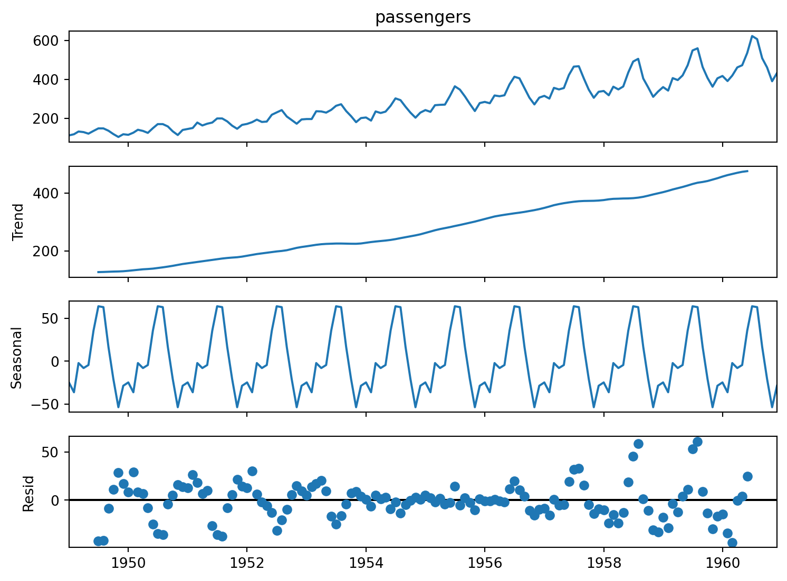

Determining what type of seasonality your time series has
Published
October 31, 2026
Seasonal patterns are one of the key structures we look for when analyzing time series data sets.
Seasonality refers to repeating patterns in a time series that occur at consistent intervals. For example, a drive-through coffee shop consistently sees their peak customer traffic around 7:30am Monday-Friday. This would be a form of seasonality.
However, not all seasonality is the same. There are two main types of seasonal fluctuations that a time series may possess. These are additive or multiplicative seasonality. Being able to identify which type of seasonality you are working with is important if you plan to use time series decomposition or model your time series data.
In the rest of this article, we will explain what each of these types of seasonality are, then we will walk through how to use visualizations in Python to identify each.
Additive Seasonality
A time series has additive seasonality if the seasonal fluctuations are consistent in size, regardless of whether the underlying data increases or decreases.
Let’s return to our coffee shop scenario from earlier in this article. Let’s say the coffee shop just opened for business a month ago and gets around 7 customers each half hour interval on average. The peak customer traffic occurs from 7:30am-8:00am on weekdays and the shop typically has 5 additional customers over the 7 customer average during that morning interval.
Now, let’s imagine that the coffee shop gets very popular over its first year of business. A year later, the coffee shop now gets around 12 customers each half hour interval on average. Additive seasonality in this case would mean that the 7:30am-8:00am interval would still get 5 additional customers over that average level.
In other words, the seasonal variation stays consistent - even though the underlying trend has caused the overall customer traffic at the coffee shop to increase.
Multiplicative Seasonality
A time series has multiplicative seasonality if the seasonal fluctuations change in size as the underlying data increases or decreases.
Let’s return to our coffee shop illustration once more. Imagine that a month in, the increased customer traffic was 5 over the average from 7:30am-8:00am. So far, exactly the same as our prior scenario. This time though, imagine that a year later, as the average customer traffic increased, the variation during that 7:30am interval also increased to 2 times as many customers than the average (+12 customers). This would be an example of multiplicative seasonality. As overall customer counts increased, the seasonal variation in our peak interval also increased.
In other words, the seasonal variation increases or decreases based on the underlying trend.
Using Visualization to Determine Seasonality Type
Many times, a simple line plot will be enough to determine whether our time series has additive or multiplicative seasonality.
We will use the flights data set from the seaborn package in Python as an example.
#Necessary importsimport pandas as pdimport matplotlib.pyplot as pltimport seaborn as sns#Load flights data into 'flights' dataframeflights = sns.load_dataset("flights")#You will often need to convert your data into a more usable form, usually with some type of time index.#This code converts the 'year' and 'month' columns into a single datatime column then sets that column as our index.flights['date'] = pd.to_datetime( flights['year'].astype(str) +'-'+ flights['month'].astype(str), format='%Y-%b')flights = flights.set_index('date')#Separate the target feature into a series. We no longer need the month/year columns since our index already has that information.y = flights['passengers']#The easiest and quickest way to visualize the data is with the .plot method. This gives you a quick line graph.y.plot(figsize=(8,6))plt.title('Flight Passengers: 1949-1960')plt.ylabel('Passengers (Thousands)')plt.xlabel('Date')plt.show();
Now, look carefully at the seasonal fluctuations (the peaks and valleys) in this line graph.
Notice how the fluctuations get bigger as the trend increases over time.
This is a strong indicator of multiplicative seasonality.
If, on the other hand, the fluctuations stayed fairly consistent - even as the underlying trend increased - we would have evidence of additive seasonality.
What would happen if we assumed incorrectly that our data had additive seasonality?
Well, let’s use statsmodels seasonal_decompose function, with the model parameter set to “additive” instead of “multiplicative” and see what happens.
from statsmodels.tsa.seasonal import seasonal_decomposeflights_decomp = seasonal_decompose( y, model='additive',#model='multiplicative' )fig = flights_decomp.plot()fig.set_size_inches(8, 6);

Look carefully at the “Resid” plot (the 4th plot). This plot shows the remaining noise in the data once the trend and seasonal components have been accounted for. Notice how the residuals flare out at the ends, rather than staying consistent and tightly clustered around 0.
This should be a red flag. There is something in our decomposition that is not properly recognizing the underlying structure of the time series.
Let’s switch the model parameter to “multiplicative” and see whether our residual plot looks any better.
Indeed, these residuals look much better. They are clustered closely to 1.0, which is what you would normally hope to see with multiplicative seasonality. There is no “flaring out” at the ends like we saw before either. This confirms what we expected from our line graph; our flights data set has multiplicative seasonality.
Conclusion
In conclusion, once you recognize seasonal structure in your time series, you should try to identify whether your seasonality is additive or multiplicative.
This will impact future steps in your data analysis, processing, and model creation.